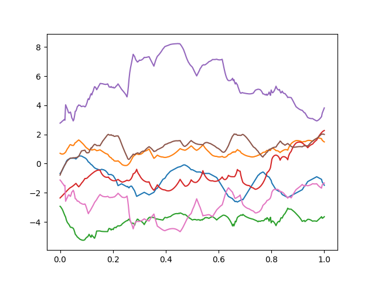

User guide¶
Configure logging¶
By default, toppra does not configure any of the toppra… loggers. Thus no log messages will be printed by default. A simple logger that only print to the console can be setup easily.
1import toppra as ta
2ta.setup_logging("INFO")
How many grid-points should be used?¶
A very important parameter in solving path parameterization instances with toppra is the number of the gridpoints. Below is how to create an instance with 1000 uniform gridpoints.
1gridpoints = np.linspace(0, path.duration, 1000) # 1000 points
2instance = algo.TOPPRA([pc_vel, pc_acc], path, gridpoints=gridpoints)
Generally, more gridpoints give you better solution quality, but also increase solution time. Often the increase in solution time is linear, that is if it takes 5ms to solve an instance with 100 gridpoints, then most likely toppra will take 10ms to solve another instance which has 200 gridpoints.
As a general rule of thumb, the number of gridpoints should be at least a few times the number of waypoints in the given path. This is not a hard rule, depending on whether the waypoints naturally form a smooth curve or whether they vary wildly.
Automatic grid-points selection¶
By default, toppra (python) will try to determine the best set of gridpoints by doing a bisection search until a threshold level is reached. This is the behavior if the gridpoints are not given.
1instance = algo.TOPPRA([pc_vel, pc_acc], path)
If there is a minimum requirement on the path quality in term of the number of gridpoints, use the keyword arguments gridpt_max_err_threshold and gridpt_min_nb_points. The default values are respectively 1e-3 and 100 points. To require the algorithm to select at least 500 points:
1instance = algo.TOPPRA([pc_vel, pc_acc], path,
2 gridpt_max_err_threshold=1e-3,
3 gridpt_min_nb_points=500)
Using different parametrizers¶
After performing the path parametrization step, i.e., computing the velocity profile, there are multiple ways that one could use to find the final trajectory. This can be set using the parametrizer keyword argument as in the below example
1instance = algo.TOPPRA(
2 [pc_vel, pc_acc], path,
3 parametrizer="ParametrizeConstAccel",
4)
This uses the constant acceleration parametrizer. See the related docstring for more details. The default parametrizer is ParametrizeSpline, which will be used if the keyword argument is not set. This parametrizer will try to fit a spline on the original waypoints using the joint velocities calculated from the velocity profile.
Minimum requirement on path smoothness¶
TOPPRA requires the input path to be sufficiently smooth to work properly. An example of a noisy path that will be very difficult to work with can be seen below:
All toppra interpolators try to match all given waypoints, and hence it can lead to large fluctuation if the waypoints change rapidly. In this case, it is recommended to smooth the waypoints prior to using toppra using for example scipy.interpolation.
Derivation of kinematical quantities¶
In toppra we deal with geometric paths, which are mathematically
functions \(\mathbf p(s)\). Here \(s\) is the path position
and usually belongs to the interval \([0, 1]\). Notice that
toppra can also handle arbitrary interval. In the code a path is
represented by a child class inherited from the abstract
toppra.interpolator.AbstractGeometricPath.
Important expression relating kinematic quantities: